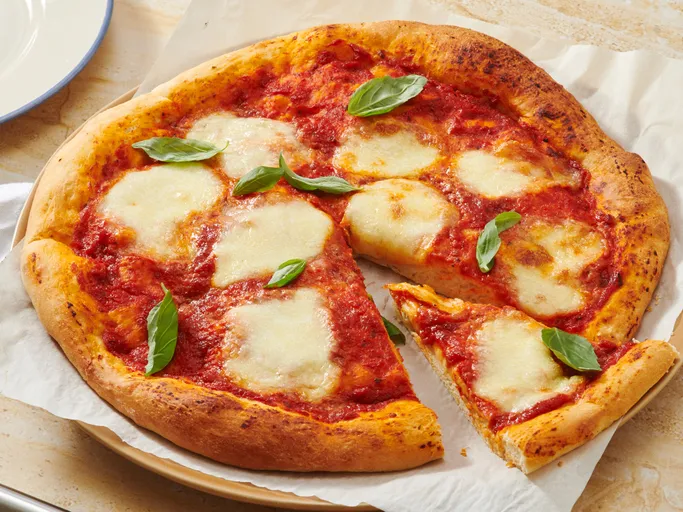

This pizza dough recipe was given to me by a friend. It's quick and easy to make for a delicious homemade pizza crust that you can top with pizza sauce and your favorite toppings!
Gather all ingredients.
Stir yeast, sugar, and warm water together in a small bowl. Let stand until foamy, about 5 minutes.
Stir 2 cups of bread flour and salt together in the bowl of a stand mixer. Add yeast mixture and 2 tablespoons of olive oil; beat with dough hook on medium speed until dough is soft and slightly tacky, about 8 minutes, adding up to 3 tablespoons more flour, 1 tablespoon at a time, mixing after each addition.
Cover and let rise at room temperature until doubled in volume, at least 1 hour or up to 2 hours. (Alternatively, cover and let rise in the refrigerator overnight.)
Preheat the oven to 475 degrees F (245 degrees C) with oven rack positioned in lower third. Turn dough out onto a lightly floured work surface. Shape into a round and roll into a thin crust. Place on a large parchment-lined baking sheet or pizza pan.
Top with desired pizza sauce and toppings. Brush edges with remaining 1 tablespoon oil.
Bake in preheated oven until crust is golden and cheese is melted bubbly, about 12 to 15 minutes.
Serve and enjoy.